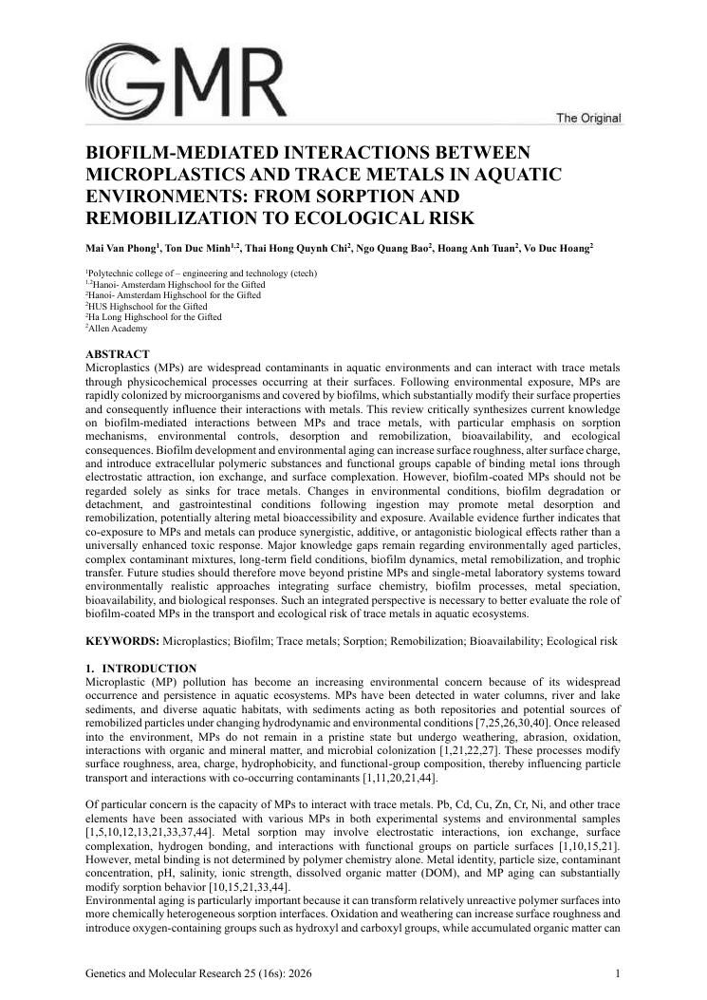

[1]
Genetics and Molecular Research · 08/2026 · đồng tác giảco-author
Biofilm-Mediated Interactions Between Microplastics and Trace Metals in Aquatic Environments: From Sorption and Remobilization to Ecological Risk
Tổng quan liên ngành về cách màng sinh học trên vi nhựa thay đổi hoá học bề mặt; đề xuất mô hình động cho chu trình hấp phụ – giải hấp kim loại vết và con đường rủi ro sinh thái trong môi trường nước.
A multidisciplinary review of how biofilms on microplastics reshape surface chemistry, proposing a dynamic model of trace-metal sorption–desorption cycles and ecological risk pathways in water.
MicroplasticsTrace metalsBiofilm
